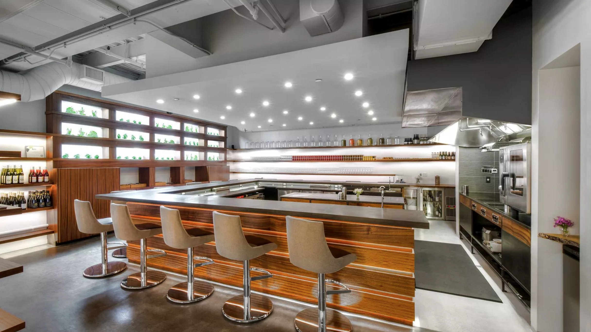

Eatsa is leading the charge in fully automating the restaurant experience.The first of its kind, Eatsa completely rids the customer experience of all human interaction.
1. You step into the restaurant and see a menu overhead.2. You order from a row of iPads.3. People behind a wall of translucent windows prepare your food.4. Once your food is prepared, your name lights up a designated window where you pick up your food.5. Sit down to eat.No unintended human interaction.
Eatsa is squeezing fast casual restaurants to be more efficient.The presence of automation is showing restaurant owners the benefits of cutting down on overhead caused by human error. That, and the fact that millennials aremore comfortable interacting with technology than having unexpected human interactions,explain why automated restaurants may be the next restaurant craze.
With many states raising minimum wage above $15/hour (for both tipped and un-tipped employees),restaurant owners are questioning the necessity of waiters to their business. For these restaurateurs,the rise in minimum wage means rising labor costs and a big impact on the bottom line.If waiters are gonna cost restaurant owners so much, why not just replace them with computers?
Eatsa is just the beginning. Automation is already making its presence felt in fast casual andmid-tier family restaurants (e.g. Panera and Applebee's), where many of the human interactions arebeing replaced by interactions with technology. While some people would say they stilllike being waited on, many people are adapting to more automated restaurant experiences.
Last, the people who still see value in being waited on desirethe utmost level of transparency between them and the food.As a result, a new type of restaurant has emerged: the tasting counter restaurant.A restaurant experience where patrons are served by the chefs, tasting counter restaurantsoffer patrons a level of service that traditional restaurants simply cannot supply.
First, we can reasonably anticipate low skill waiters being replaced by automation.We will always have the need to refill drinks and have our food dropped at the table,but really anything that is required of a low skill waiter can be replaced by technology(if it hasn't already).
Second, while many of us still see value in being waited on(the knowledge of the waiters and their ability to make recommendations)chefs at tasting counter restaurants can really handle anythingthe high skill waiters provide.
So while Eatsa is a relatively new, young business, it is playing a crucial rolein forecasting the drastic changes we will see to the role of the waiter.